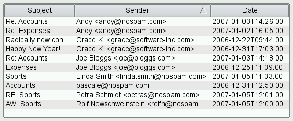

| Home · All Classes · Main Classes · Grouped Classes · Modules · Functions |
The QSortFilterProxyModel class provides support for sorting and filtering data passed between another model and a view. More...
#include <QSortFilterProxyModel>
Inherits QAbstractProxyModel.
This class was introduced in Qt 4.1.
The QSortFilterProxyModel class provides support for sorting and filtering data passed between another model and a view.
QSortFilterProxyModel can be used for sorting items, filtering out items, or both. The model transforms the structure of a source model by mapping the model indexes it supplies to new indexes, corresponding to different locations, for views to use. This approach allows a given source model to be restructured as far as views are concerned without requiring any transformations on the underlying data, and without duplicating the data in memory.
Let's assume that we want to sort and filter the items provided by a custom model. The code to set up the model and the view, without sorting and filtering, would look like this:
QTreeView *treeView = new QTreeView;
MyItemModel *model = new MyItemModel(this);
treeView->setModel(model);
To add sorting and filtering support to MyItemModel, we need to create a QSortFilterProxyModel, call setSourceModel() with the MyItemModel as argument, and install the QSortFilterProxyModel on the view:
QTreeView *treeView = new QTreeView;
MyItemModel *sourceModel = new MyItemModel(this);
QSortFilterProxyModel *proxyModel = new QSortFilterProxyModel(this);
proxyModel->setSourceModel(sourceModel);
treeView->setModel(proxyModel);
At this point, neither sorting nor filtering is enabled; the original data is displayed in the view. Any changes made through the QSortFilterProxyModel are applied to the original model.
The QSortFilterProxyModel acts as a wrapper for the original model. If you need to convert source QModelIndexes to sorted/filtered model indexes or vice versa, use mapToSource(), mapFromSource(), mapSelectionToSource(), and mapSelectionFromSource().
By default, sorting and filtering isn't dynamically reapplied whenever the data of the original model changes, as an optimization. To enable dynamic sorting and filtering, call setDynamicSortFilter(true). At any time, you can call clear() to resort/refilter the data.
QHeaderView has a showSortIndicator() property and a setClickable() function that together control whether the user can sort the view by clicking the view's horizontal header. For example:
treeView->header()->setClickable(true);
treeView->header()->setSortIndicatorShown(true);
When this feature is on, clicking on a header section sorts the items according to that column. By clicking repeatedly, the user can alternate between ascending and descending order.

Behind the scene, the view calls the sort() virtual function on the model to reorder the data in the model. To make your data sortable, you can either implement sort() in your model, or you use a QSortFilterProxyModel to wrap your model -- QSortFilterProxyModel provides a generic sort() reimplementation that operates on the Qt::DisplayRole of the items and that understands several data types, including int, QString, and QDateTime. For hierarchical models, sorting is applied recursively to all child items. String comparisons are case sensitive.
Custom sorting behavior is achieved by subclassing QSortFilterProxyModel and reimplementing lessThan(), which is used to compare items. For example:
bool MySortFilterProxyModel::lessThan(const QModelIndex &left,
const QModelIndex &right) const
{
QVariant leftData = sourceModel()->data(left);
QVariant rightData = sourceModel()->data(right);
if (leftData.type() == QVariant::DateTime) {
return leftData.toDateTime() < rightData.toDateTime();
} else {
return QString::localeAwareCompare(leftData.toString(),
rightData.toString()) < 0;
}
}
An alternative approach to sorting is to disable sorting on the view and to impose a certain order to the user. This is done by explicitly calling sort() with the desired column and order as arguments on the QSortFilterProxyModel (or on the original model if it implements sort()). For example:
proxyModel->sort(2, Qt::AscendingOrder);
The Sorting Model example illustrates how to use QSortFilterProxyModel to perform basic sorting.
In addition to sorting, QSortFilterProxyModel can be used to hide items that don't match a certain filter. The filter is specified using a QRegExp object and is applied to the Qt::DisplayRole of each item, for a given column. The QRegExp object can be used to match a regular expression, a wildcard pattern, or a fixed string. For example:
proxyModel->setFilterRegExp(QRegExp(".png", Qt::CaseInsensitive,
QRegExp::FixedString));
proxyModel->setFilterKeyColumn(1);
For hierarchical models, the filter is applied recursively to all children. If a parent item doesn't match the filter, none of its children will be shown.
Custom filtering behavior can be achieved by reimplementing the filterAcceptsRow() and filterAcceptsColumn() functions. For example, the following implementation ignores the filterKeyColumn property and performs filtering on columns 0, 1, and 2:
bool MySortFilterProxyModel::filterAcceptsRow(int sourceRow,
const QModelIndex &sourceParent) const
{
QModelIndex index0 = sourceModel()->index(sourceRow, 0, sourceParent);
QModelIndex index1 = sourceModel()->index(sourceRow, 1, sourceParent);
QModelIndex index2 = sourceModel()->index(sourceRow, 2, sourceParent);
return (sourceModel()->data(index0).toString().contains(filterRegExp())
|| sourceModel()->data(index1).toString().contains(filterRegExp()))
&& dateInRange(sourceModel()->data(index2).toDate());
}
See also QAbstractProxyModel, QAbstractItemModel, and Model/View Programming.
This property holds the case sensitivity of the QRegExp pattern used to filter the contents of the source model.
By default, the filter is case sensistive.
Access functions:
See also setFilterRegExp(), setFilterWildcard(), and setFilterFixedString().
This property holds the column where the key used to filter the contents of the source model is read from.
The default value is 0.
Access functions:
This property holds the QRegExp used to filter the contents of the source model.
Setting this property overwrites the current filterCaseSensitivity.
Access functions:
See also setCaseSensitivity(), setFilterWildcard(), and setFilterFixedString().
Constructs a sorting filter model with the given parent.
Destroys this sorting filter model.
Clears this sorting filter model, removing all mapping.
Returns true if the value in the item in the column indicated by the given source_column and source_parent should be included in the model.
The default implementation returns true.
See also filterAcceptsRow().
Returns true if the value in the item in the row indicated by the given source_row and source_parent should be included in the model.
The default implementation uses filterRegExp with the data returned for the Qt::DisplayRole to determine if the row should be accepted or not.
See also filterAcceptsColumn().
Returns true if the value of the item referred to by the given index left is less than the value of the item referred to by the given index right, otherwise returns false. This function is used as the < operator when sorting, and handles several QVariant types:
See also sort().
Returns the model index in the QSortFilterProxyModel given the sourceIndex from the source model.
Reimplemented from QAbstractProxyModel.
See also mapToSource().
Returns the source model index corresponding to the given proxyIndex from the sorting filter model.
Reimplemented from QAbstractProxyModel.
See also mapFromSource().
Sets the fixed string used to filter the contents of the source model to the given pattern.
See also setFilterCaseSensitivity(), setFilterRegExp(), and setFilterWildcard().
Sets the wildcard expression used to filter the contents of the source model to the given pattern.
See also setFilterCaseSensitivity(), setFilterRegExp(), and setFilterFixedString().
| Copyright © 2006 Trolltech | Trademarks | Qt 4.1.5 |